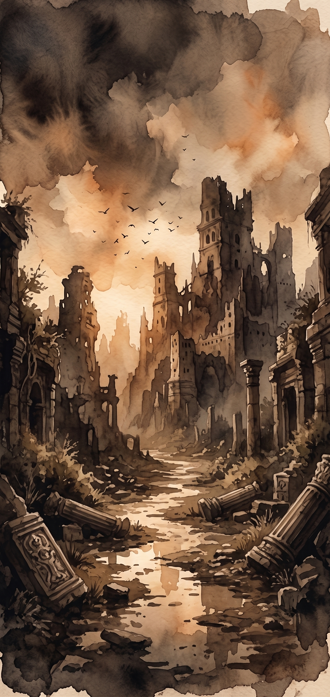
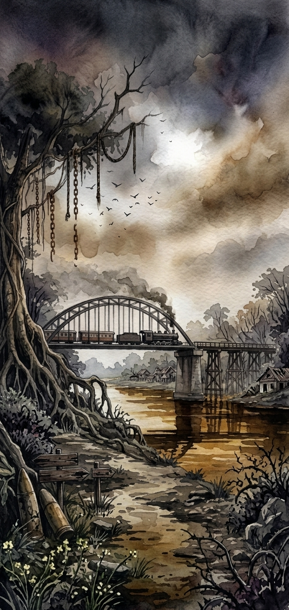
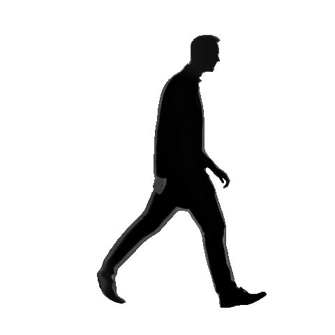

การท่องเที่ยวเชิงมืด (Dark Tourism) คือการเดินทางไปเยือนสถานที่ที่มีความเกี่ยวข้องกับความตาย ความสูญเสีย หรือโศกนาฏกรรมในประวัติศาสตร์ เพื่อเรียนรู้เรื่องราวและรำลึกถึงเหตุการณ์ในอดีต ตัวอย่างเช่น การเยี่ยมชมพิพิธภัณฑ์สงคราม อนุสรณ์สถาน หรือพื้นที่สนามรบจริง
ขอบคุณที่ร่วมเดินทางกับ THE DARK JOURNEY
ทุกคำตอบของท่าน มีส่วนสำคัญต่อการศึกษาครั้งนี้